| ・ 平成28年度オープンキャンパス (H28.08.07-08) | |||
助教の人は学会の実行委員で対応出来ないので，去年と同様にM1が担当します．今年から自分のテーマに沿った演し物を用意してもらうことになりました．そこで音響計測のテーマを研究しているF井くんが，ボイスチェンジャーの仕組みを実演交えて説明しました．来年M1になる人は何をやってくれるのか楽しみです（また助教の人は学会で居ない予定）．参加総数がまたまた記録更新． |
|||
|
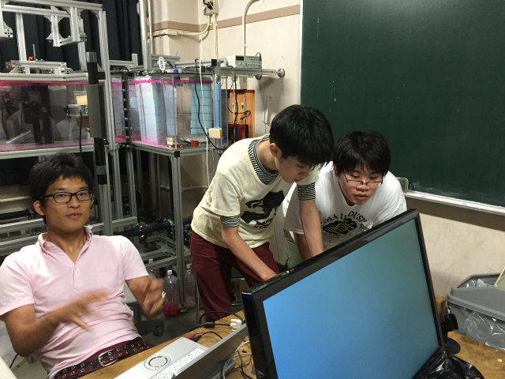
前日準備，テレビ2台接続が上手く行かない |
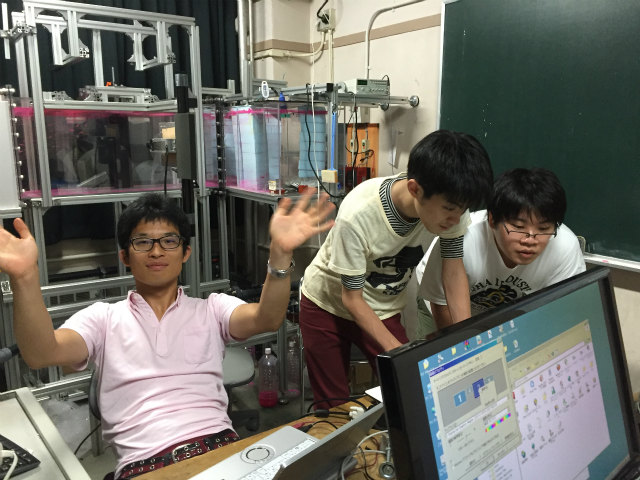
担当じゃないのでリラックスしてるY西くん | ||
|
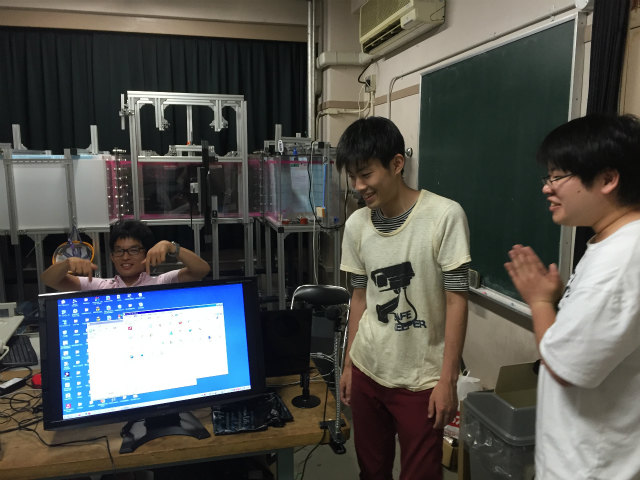
テレビ接続完了 |
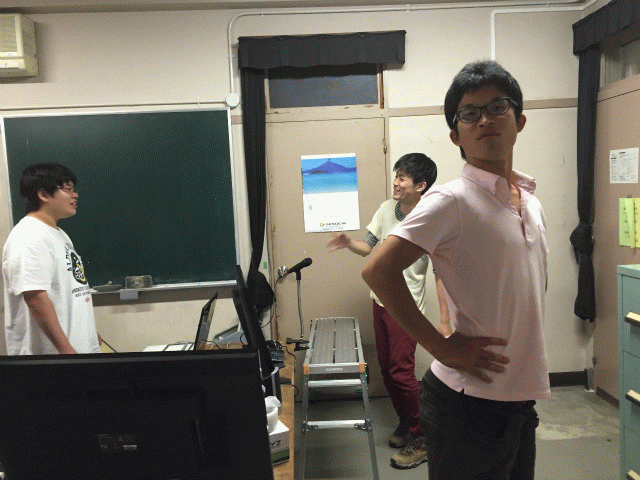
説明はポージングも大事 | ||
|
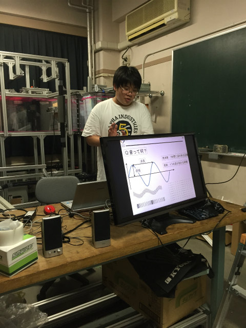
振幅，位相，周波数！Fourier解析も！！ |
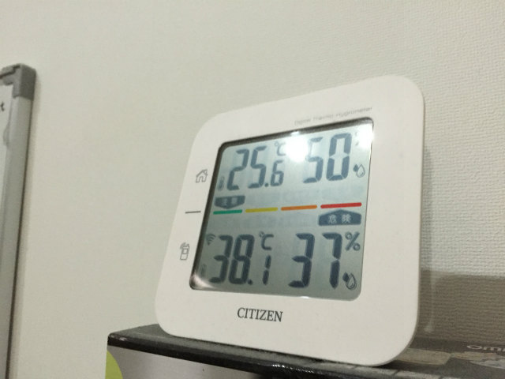
当日は危ない温度 | ||
|
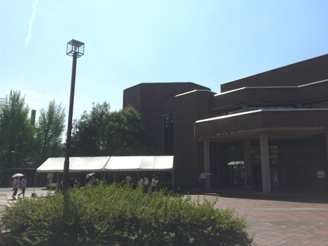
あっつ |
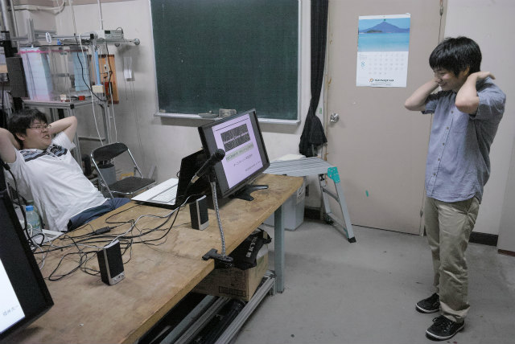
誘導のM1のHくん | ||
|
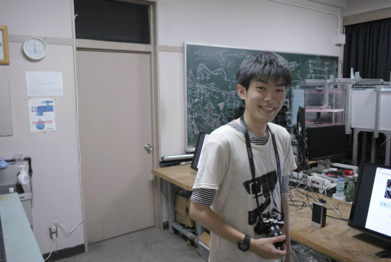
カメラマンのM2，TNくん |
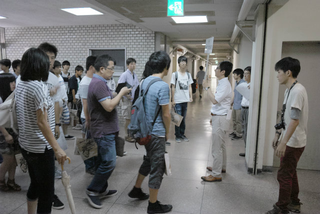
誘導が大変 | ||
|
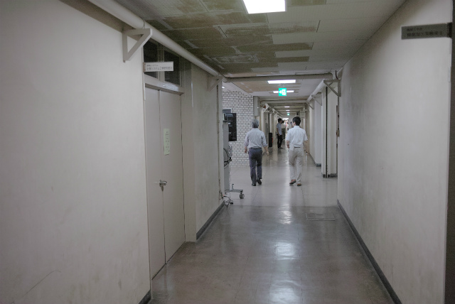
各部屋へ分配 |
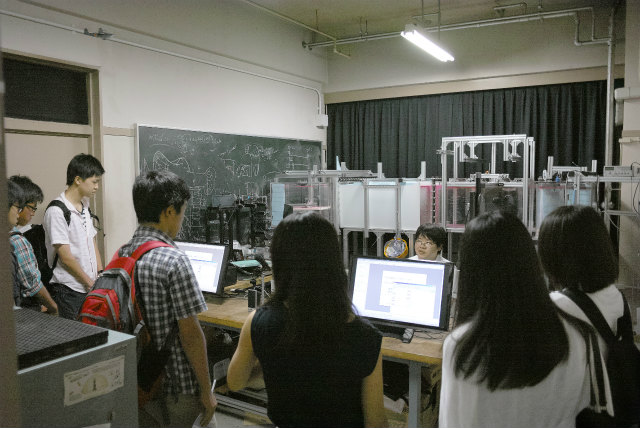
ひとが多い | ||
|
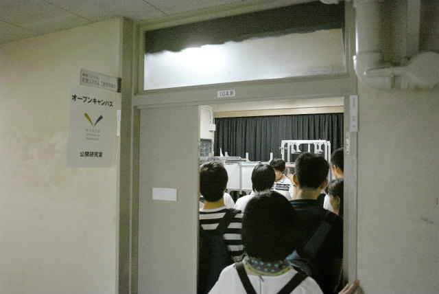
あふれた |
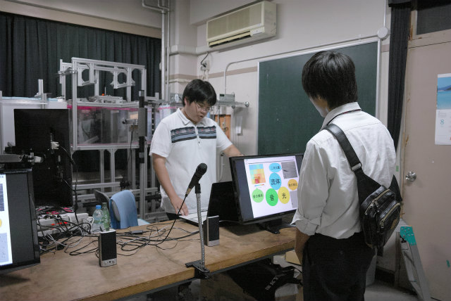
ひとりでも全力 | ||